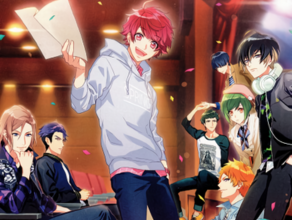
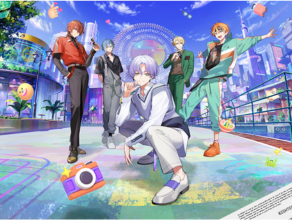
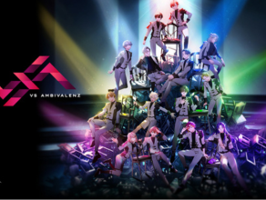
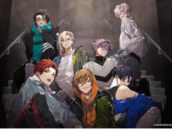
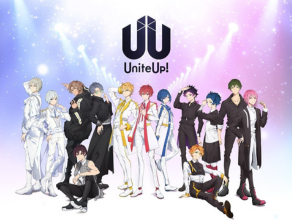
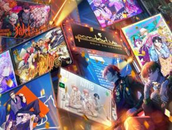

-

A3!
A3! is a game that follows the story of MANKAI company and their revival after years of being in debt and worn down. Izumi, our main character, works gathers 24 actors, each with unique personalities and skills, and helps them to confront their pasts using theater. Favorites: Winter Troupe -

18TRIP
18TRIP is a story about the revitalization of the 18 wards of HAMA in 2055. Kafka Ooguro and the main character create the company HAMA Tours, recruit new ward mayors, and work to provide hospitality to guests and restore HAMA to its prior glory. Favorites: L4MPS -

VSAMBIVALENZ
VSAMBIVALENZ follows an idol audition of 14 trainees held over the course of one year. Every trainee is given a color, and their rival is given the same. Each is determined to be the one to take that color in the final unit of 7. The audience voted live for the winners, who then become the debut unit of 7, XlamV. Favorites: MIO, CUC, AUGURI
-

HANADOLL
The HANADOLL Project is a project that centers upon two groups under production agency Amagiri Productions. In order to create a near-perfect idol, seeds are planted inside the bodies of the boys. Once they bloom, their flowers enhance their abilities, and they grow closer and closer to "perfection." FAVORITES: Chise, Setsuna, Toki -

UNITEUP
After Maoto and Lin, the legendary idols behind Anela, retire and open their own talent agency, they begin scouting up and coming talented utaite to become the new generation of idols. The story follows the main group Protostar, as well as the other two groups at sMiLea Productions, LEGIT and JAXXJAXX. FAVORITES: Anela, Homare -

PARADOX LIVE
After the disappearance of Club Paradox years prior, the sudden reappearance of the club and the announcement of the competition 'Paradox Live' drags the hiphop groups BAE, The Cat's Whiskers, Akanyatsura, and cozmez, all gathered to gain the right to battle against the legendary unit BURAIKAN. FAVORITES: Anne, Shion, Rokuta, Hokusai